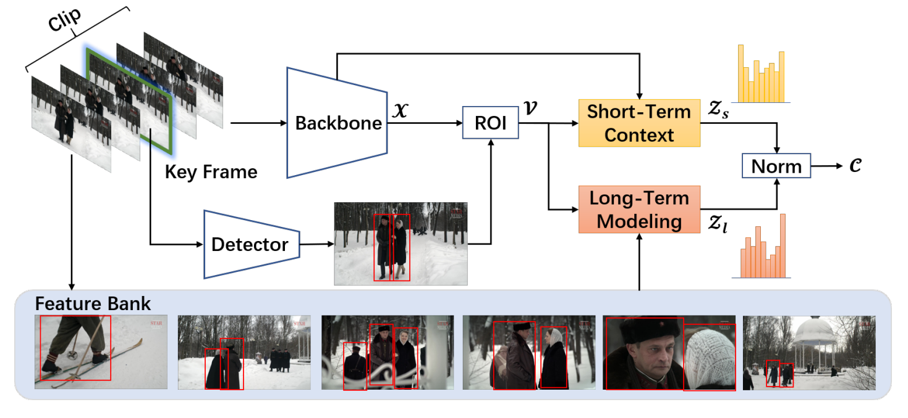
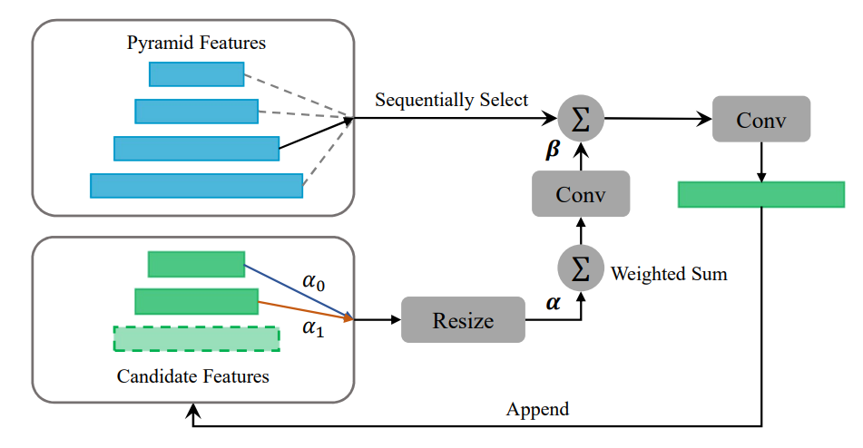
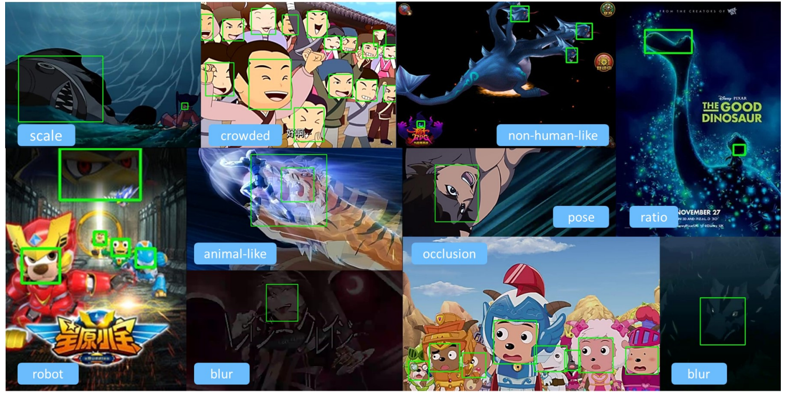
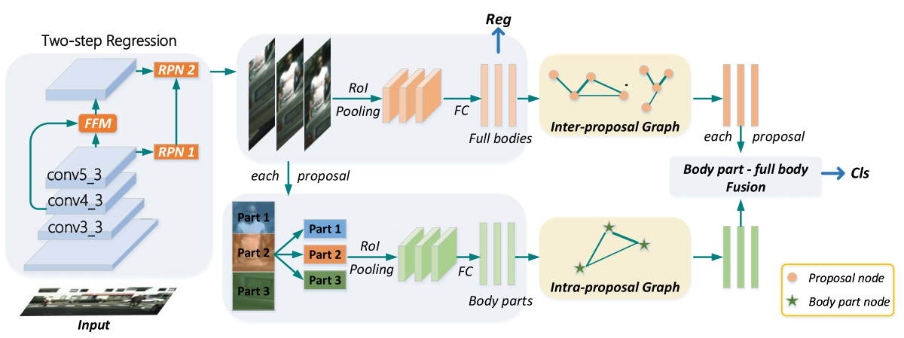
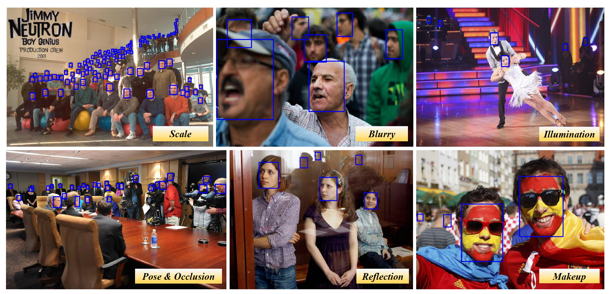
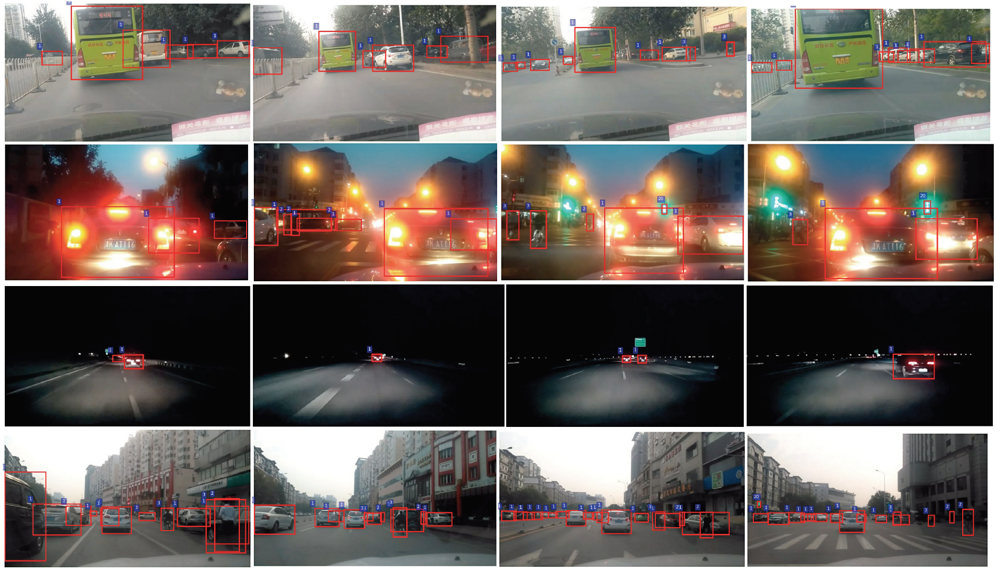
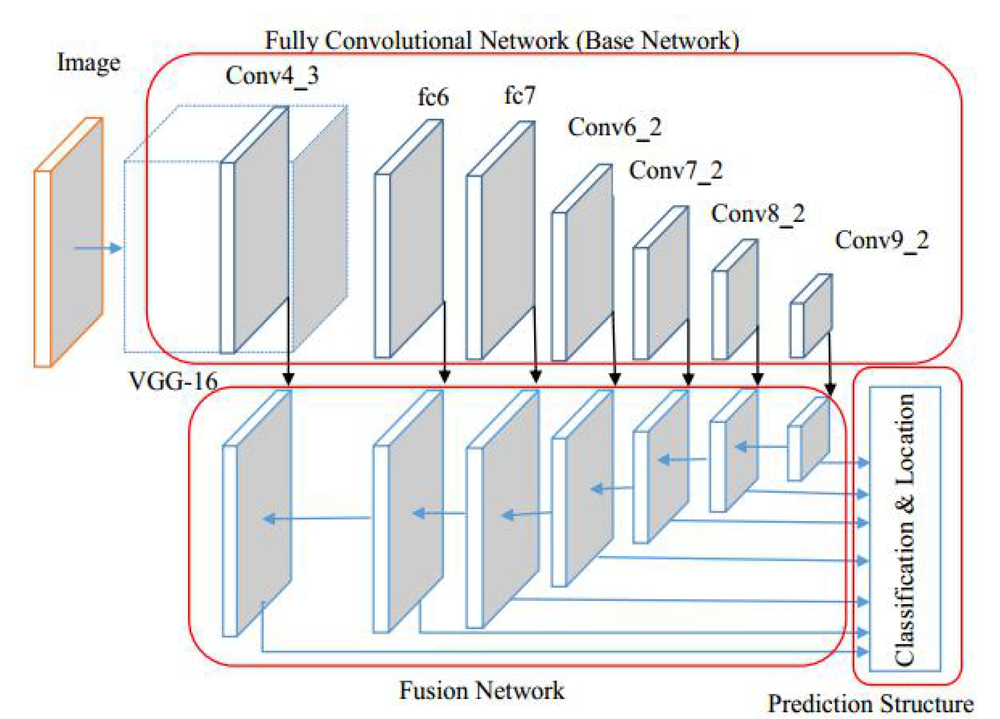
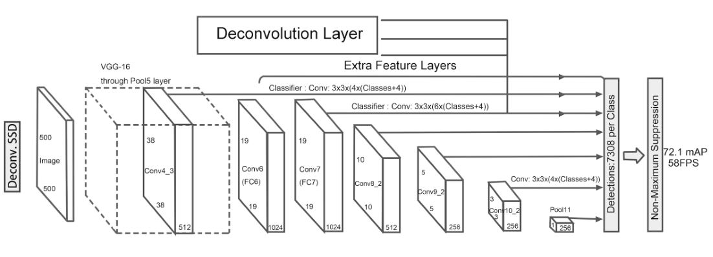
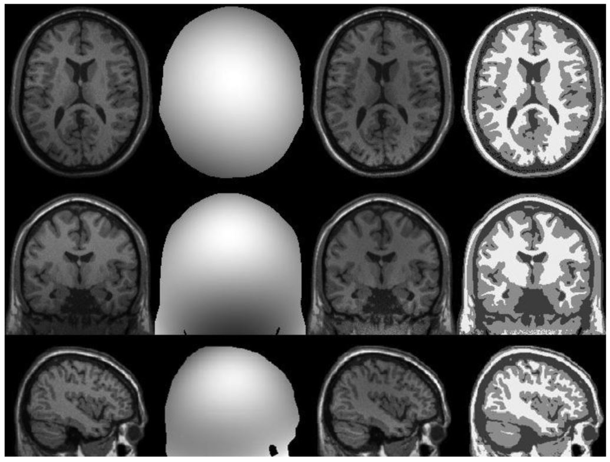

|
From Sep. 2012 to Jun. 2016, I got my B.S. Degree from the School of Mathematics and Statistics, Nanjing University of Information Science and Technology (NUIST). From Sep. 2016 to Apr. 2019, I got my M.S. Degree from the Department of Computer Science and Engineering, Nanjing University of Science and Technology (NUST), and my advisors are Prof. Jian Yang and Prof. Jianjun Qian. Currently, I am a Researcher at Tencent Youtu Lab.
We are hiring self-motivated interns on computer vision, especially object detection (e.g., face detection, temporal action detection, etc). Please send me your CV if you are interested.
Recent news
11/2019 – The code of our DBG is released at [ActionDetection-DBG].
11/2019 – Our DBG on action detection is accepted by AAAI'20, with the acceptance rate to be 20.6%
07/2019 – Be an Researcher in Tecent Youtu Lab
04/2019 – Be an Assistant Researcher in Tecent Youtu Lab
03/2019 – The code of our DSFD is released at [FaceDetection-DSFD].
02/2019 – Our DSFD on face detection is accepted by CVPR'19
12/2018 – Our team Amadeus won the 2nd Place in Self-Driving Visual Perception Task of 2018 AIChallenger
10/2018 – We released a novel Dual Shot Face Detector (DSFD) framework that achieves Top 1 performance on all FIVE settings of WIDER FACE (Easy/Medium/Hard) and FDDB (Discrete/Continuous) datasets
06/2018 – Be an Intern in Tecent Youtu Lab
10/2017 – Be an Intern in Tecent Wechat
09/2017 – Our team abccba won the 1st Place in 2017 Didi-Udacity Self-Driving Car Challenge
07/2017 – Be an Intern in TuSimple
04/2017 – 1 paper accepted by ICIP'17
01/2017 – Our team 3058 won the 1st Place in 2016-2017 UCar-Bittiger Self-Driving Deep Learning Challenge
11/2016 – Our team Dawei won the 2nd Place in Computer Vision Task of 2016 Shanghai BOT Big Data Application Competition
09/2016 – I joined in PCALab
07/2016 – Be an Intern in ArcSoft
04/2016 – 1 paper accepted by IET Image Processing
12/2015 – Visited student in ICST of PKU
Publications
|  |
| ||
|  |
| ||
|  |
| ||
|  |
| ||
 |
| ||
 |
| ||
|  |
| ||
|  |
| ||
|  |
| ||
|  |
| ||
|  |
|
Awards
2019 Pioneer Awards of Youtu Lab, Tencent
2018 Second-class Scholarship of Ministry of Industry and Information Technology, China
2017 Awards of Tencent Elite Graduate Program
2017 Principal Medal of Nanjing University of Science and Technology
2017 National Graduate Scholarship
2016 Second Prize of Graduate Mathematical Contest in Modeling, China
2015 Merit Student of Jiangsu Province
2014 First Prize of Jiangsu Province, Second Prize of China for LanQiao Cup Programing Contest.
Projects
Adversarial Attack and Defense
Temporal Action Detection
Human Pose Estimation
Face Detection
Large-scale Wechat Image Multi-label Classification
Attribute Classification for Fashion Clothes
2D/3D Object Detection for Self-Driving
Trajectory Prediction for Self-Driving
Price Estimation for Used Car
Distributed Platform of Machine Learning
Digital Recognition of Industrial Meter
Handwriting Chinese Recognition
Medical Image Segmentation
Fingerprint Identification